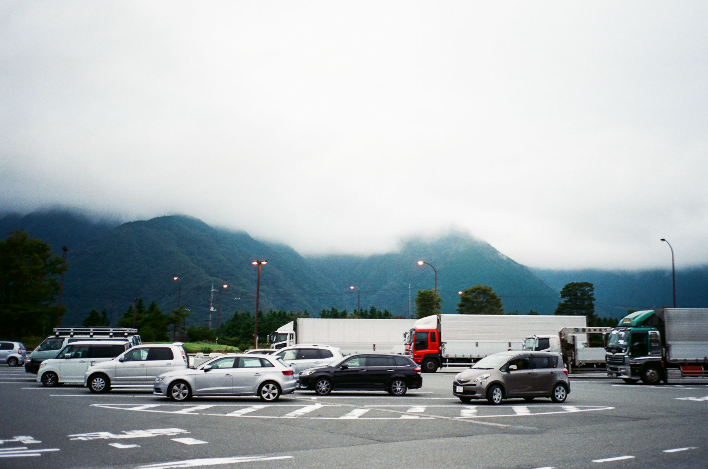

去到旅程的第十一天，要離開浜松，向富士宮市出發，我在浜松駅的月台上吃了一碗蕎麥麵作早餐。
乘坐JR東海道本線向東行到富士駅，再轉乘身延線到富士宮駅，由於這天陰天多雲，否則會看到富士山呢！
把旅館放下在車站對面的一家民宿，我便去了富士山本宮淺間大社，日本有很多富士山信仰的淺間大社，而這裏是淺間大社的「總社」。
遊覽完後，我在附近的一間食店吃了一盤出名的富士炒麵（焼きそば），但是味道和一般的炒麵沒有甚麼分別。吃飽後在附近亂逛…
時間尚早，我坐巴士進入富士山腳下的朝霧高原，去了一個類似公路中途休息站的地方，這裏有很多當地出產的農產品售賣，亦有一個食堂，我在這裏買了一些手信，吃了咖喱飯當晚餐。


這裏還有幾家店，售賣朝霧高原牛奶相關產品、釀酒廠等等，很快便行到接近黃昏時間了。
逛完後便乘坐巴士回到旅館大覺訓，期待明天的行程！